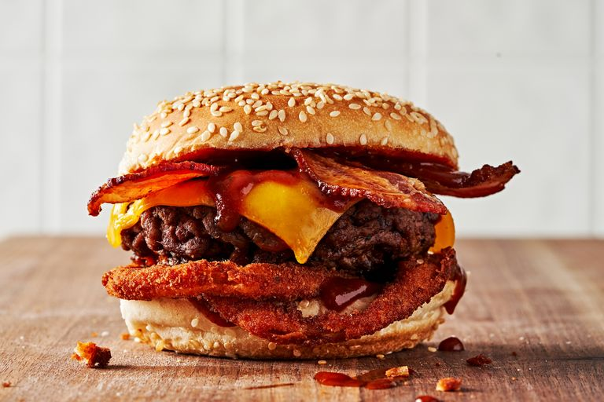

Carl's Jr. Western Bacon Cheeseburger

Description
Onion rings, bacon, American cheese and tasty barbecue sauce combine to make a manly gut-grinder that can be
thoroughly enjoyed during the grilling season, or any time of the year if you use an indoor grill. The sandwich was
introduced in 1983, and since then it has been very successful.
While any barbecue sauce you use for this recipe
will work just fine, track down some Bulls-Eye Hickory Smoke flavor barbecue sauce if you want the closest cloned
results. Also, you can accomplish this burger with frozen onion rings, but making your own fresh–and keeping them
fresh–until burger assembly seals the deal.
Ingredients
- ¼ c. whole milk
- 1 large egg
- 1 tsp. sweet or smoked paprika
- ½ tsp. garlic powder
- ½ tsp. onion powder
- Kosher salt
- Freshly ground black pepper
- ½ c. all-purpose flour
- 2 tbsp. plus 2 tsp. cornstarch
- ¾ c. bread crumbs, such as panko
- Canola oil, for frying
- 1 large yellow onion
- 8 slices bacon
- 1 lb. ground beef, divided into 4 patties
- 4 slices American cheese
- 4 sesame seed buns
- BBQ sauce, for topping
Steps
- In one shallow bowl, whisk together milk, egg, paprika, garlic powder, onion powder, 1 teaspoon of salt and a
few cracks of black pepper until thoroughly combined. In another shallow bowl, whisk together flour and
cornstarch. In a final bowl, add bread crumbs.
- Fill a heavy bottomed pot with about 3” of oil and place over medium heat. Bring oil up to 375º. Meanwhile,
preheat the oven to 225° to keep everything warm.
- Slice the onion into 8 ¼ thick rings (you may need 2 onions), give them a quick rinse in cold water, then
immediately add the onion slices to the flour mixture. Toss to coat, dredge in the egg, and finally coat with
bread crumbs.
- Working in batches, fry the onion rings until golden brown and crispy, flipping halfway through, about 3 to 4
minutes. Transfer to a baking sheet lined with a wire rack and transfer to the oven to keep warm.
- Place bacon strips in a large heavy bottomed skillet, then turn the heat to medium-high. Cook until bacon is
crisp but not burnt, flipping halfway through, about 4 minutes. Transfer to the baking sheet (that’s in the oven)
and transfer sheet back to the oven.
- Wipe out the skillet and return it to medium-high heat. Add 2 teaspoons oil and heat until shimmering. Season
the patties heavily with salt and pepper on both sides and transfer to the skillet.
- Cook the burgers until cooked to your desired doneness and a crust has formed on each side, about 2 to 3 minutes
per side. After the first flip, top the burgers with cheese.
- While the burgers cook, prepare the buns by adding BBQ sauce to both the inside top and bottom buns. Top the
bottom buns with 2 onion rings.
- When the burgers are cooked and the cheese has melted, add them to the buns and finish with 2 strips of bacon.
And done!